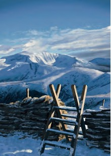

Craig Taylor

Mae Craig Taylor yn paentio pynciau bywyd gwyllt (yn enwedig adar) mewn arddull realistig.
Mae’n defnyddio Acrylig, Olew, Dyfrlliw a Gouache.
Mae’n wyliwr adar gydol oes.
Craig Taylor paints wildlife subjects (particularly birds) in a realistic style.
He uses Acrylic, Oil, Watercolour and Gouache.
He is a lifelong birdwatcher.
Telephone 07342 346955
craigtaylorartist@outlook.com
www.craigtaylorartist.co.uk
29, STAD TREASERTH, LLANGAFFO. LL60 6NP
O Bentre Berw i Langaffo ar y B4419, wrth i chi ddod i mewn i’r pentref cymerwch y troad cyntaf i’r dde i Stad Treaserth,y byngalo yw’r ail ar y dde wrth i chi droi i mewn. Mae’r stiwdio drwy’r garej.
From Pentre Berw to Llangaffo on the B4419, as you enter the village take the first right into Stad Treaserth, the bungalow is the second on the right as you turn in. Studio is through the garage.